مرشحات الشاشة وانتقالات المشاهد دون برمجة على أندرويد
32 مرشح شاشة (تلفاز، VHS، تحت الماء، كابوس، مصباح يدوي…) و19 انتقال مشهد: كل ما في مثال Filters showcase، صُنع دون سطر برمجة واحد على جهاز أندرويد لوحي.
اصنع رواية بصرية دون برمجة على أندرويد
شخصيات تتكلم، خيارات، عدة نهايات، شاشة عنوان بحفظ، معرض وقلوب صداقة: قصة خيارات صُنعت بـ Yop2D، دون سطر برمجة واحد، على جهاز أندرويد لوحي.
تأثيرات الجسيمات دون برمجة على أندرويد
انفجارات ونار ودخان ومطر وثلج وفضاء فائق وصعق كهربائي وتوقف عند الضربة ووميض وتلاشٍ: كل تأثير في مثال Effects showcase، صُنع دون سطر برمجة واحد على جهاز أندرويد لوحي.
المشاريع والتصدير
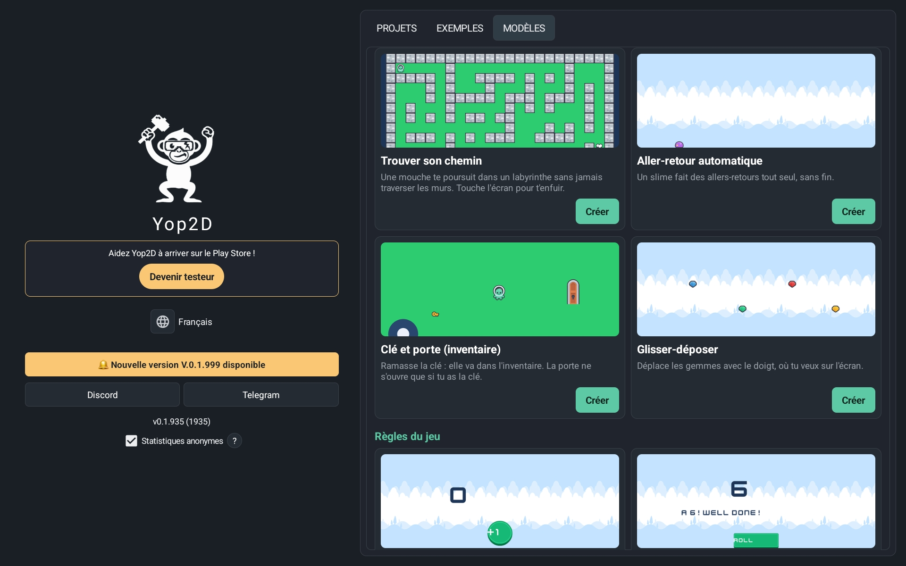
من الشاشة الرئيسية تجد مشاريعك بصورها المصغرة وتفتح ألعاب الأمثلة لتتعلم بسرعة. بزر واحد يبني Yop2D لعبتك كملف APK مستقل، مباشرة على جهازك: لا حاسوب ولا خادم ولا أداة خارجية.
63 نموذجاً للتعلم
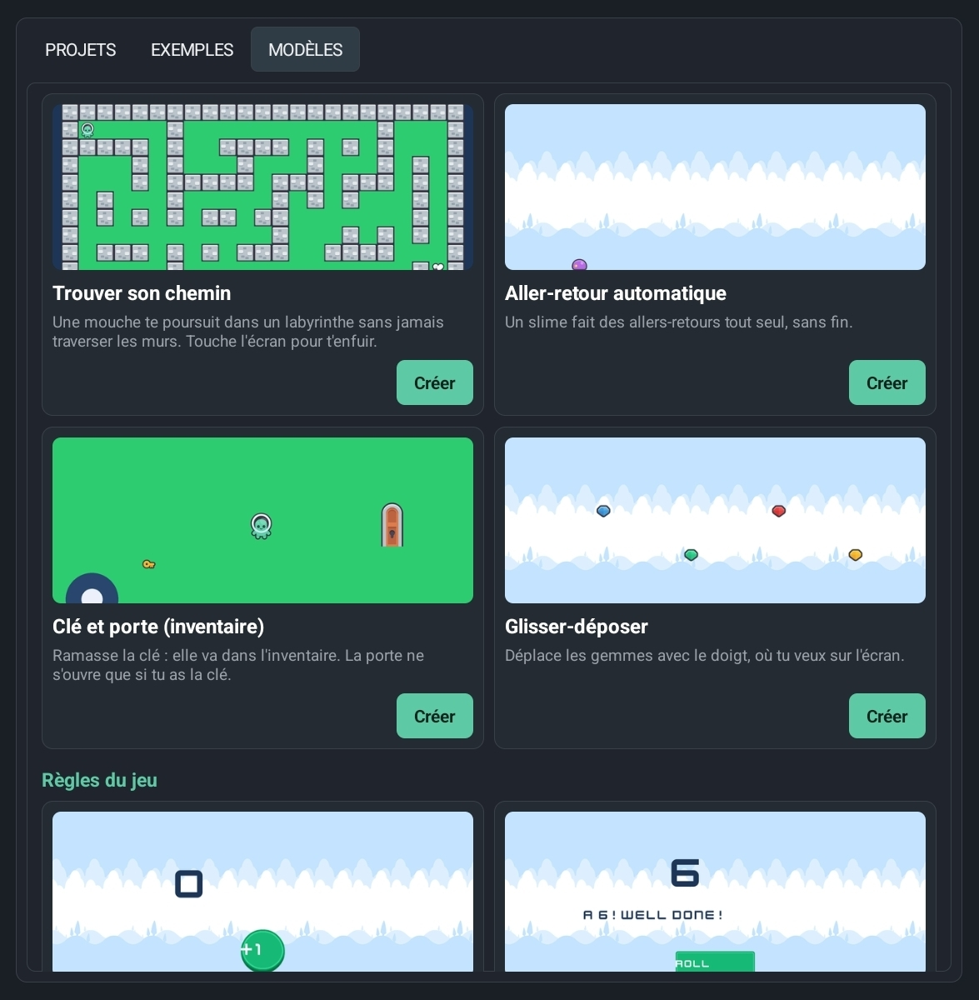
في تبويب «النماذج» يسألك Yop2D: «أي لعبة تريد صنعها؟»: 63 مشروعاً صغيراً يُظهر كل منها شيئاً واحداً (الحركة، القفز، التصويب، إيجاد المسار، متغير، واجهة، إيقاف مؤقت، جسيمات…)، مرتبة حسب الفئة. كل نموذج يعمل فوراً ويشرح على الشاشة أي عقدة تفعل ماذا. وفي الأعلى يأخذك دليل «لعبتك الأولى في 5 دقائق» خطوة بخطوة.
مكتبة فيها كل شيء
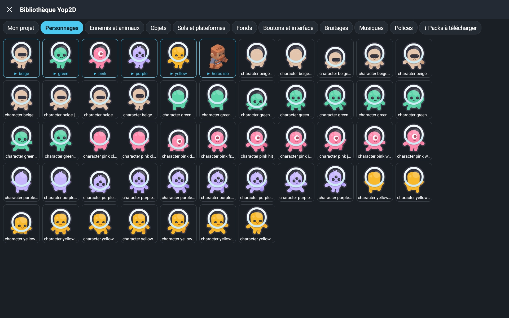
لصنع لعبتك الأولى لا تحتاج إلى البحث في مكان آخر: المكتبة داخل Yop2D بالفعل. شخصيات وأعداء متحركون، أغراض، أرضيات ومنصات، خلفيات، أزرار، مؤثرات صوتية، موسيقى، خطوط وعناوين جاهزة: بلمسة واحدة تصل الصورة إلى لعبتك بكل رسومها المتحركة (سكون، مشي، قفز…). تُضاف الحزم عبر الإنترنت (قراصنة، فضاء، واجهة هولوغرام، مؤثرات خاصة، طائرة، وحوش، إيماءات اللمس) بزر واحد، وكل شيء حر الاستخدام.
محرر مستويات مرئي
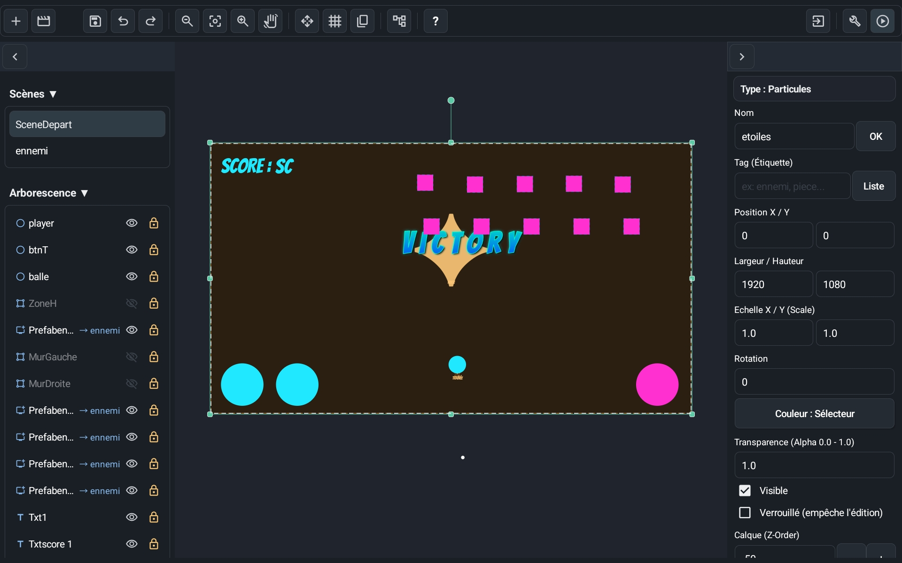
واجهة مستوحاة من المحركات الاحترافية ومصممة للشاشات اللمسية. المس كائناً لتحديده، واسحب لتحريك المشهد، واستخدم المقابض للتحريك أو تغيير الحجم أو التدوير. أخفِ أي كائن أو اقفله بلمسة واحدة حتى لا يتحرك بالخطأ.
مستويات مبنية بالبلاط
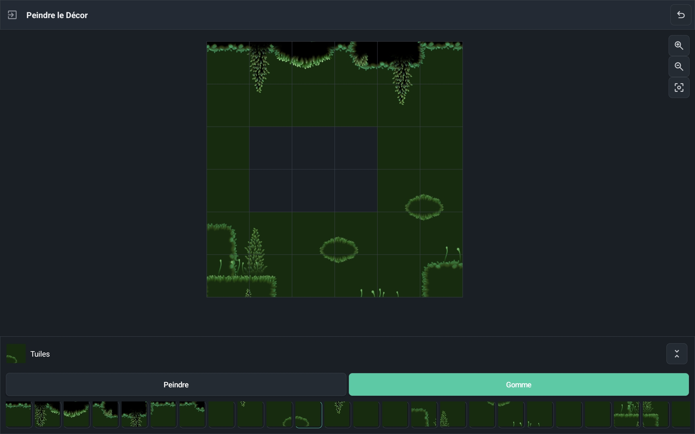
استورد مجموعة بلاط، وارسم مستوياتك بلاطة بلاطة، وحدد مرة واحدة أي البلاطات صلبة. تُعالج التصادمات تلقائياً، فتُبنى ألعاب المنصات وخرائط المنظر العلوي بسرعة.
محرر رسوم متحركة فوري
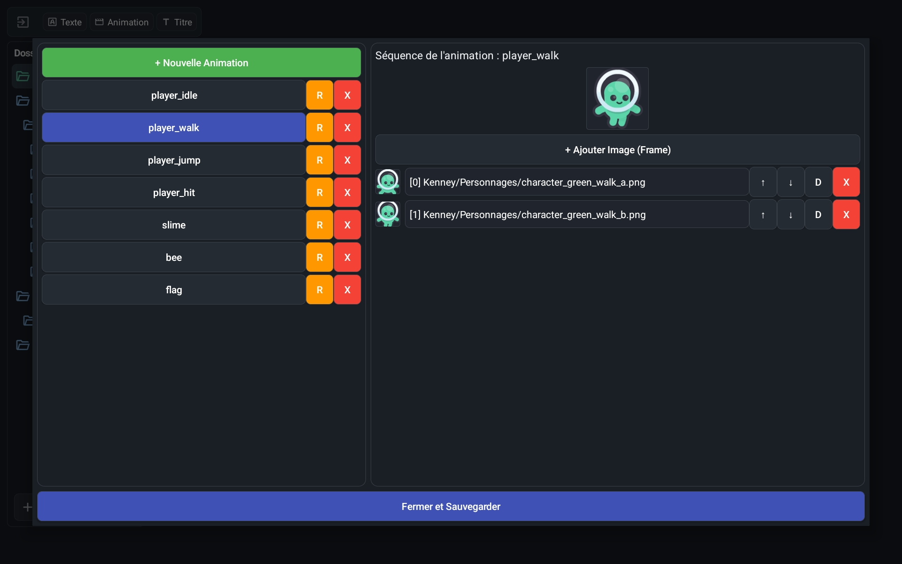
شاهد إطاراتك المستوردة دفعة واحدة وعاين رسومك ثنائية الأبعاد فوراً داخل المحرك. في اللعبة تتبع الرسوم المتحركة الإيقاف المؤقت والحركة البطيئة كما يفعل كل شيء.
عناوين وتأثيرات نصية مدمجة
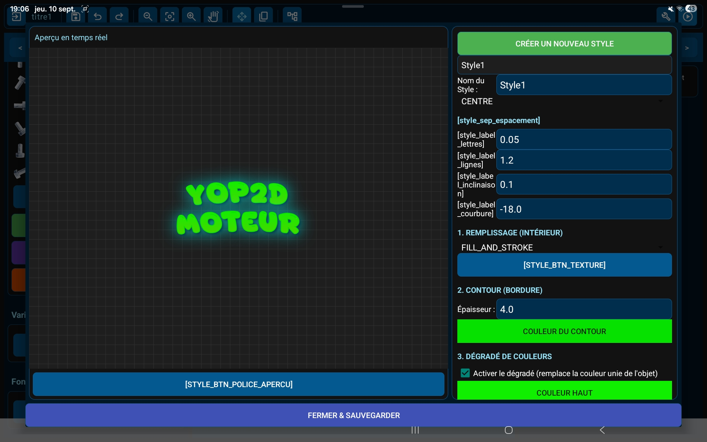
أنشئ عناوين منسقة (تدرجات، حدود، نيون، ظلال، نقش، خامات، منحنيات) مباشرة في المحرك، بدل صنع صور نصية ثقيلة في تطبيقات أخرى. يبقى ملف APK النهائي خفيفاً.
نصوص وحوارات بعدة لغات
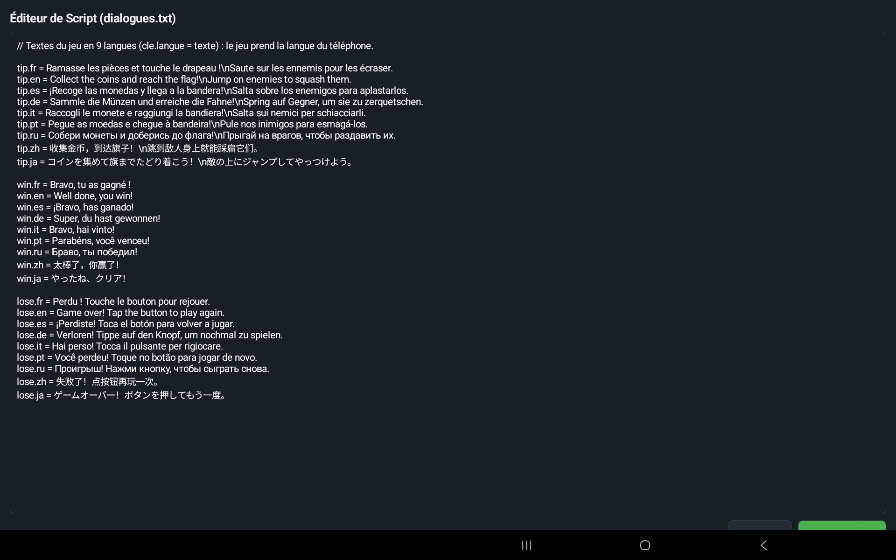
كل نصوص اللعبة مجمعة في ملف واحد تعدّله داخل Yop2D: سطر لكل لغة (hello.fr وhello.en…). تختار عقدة «عرض حوار» لغة هاتف اللاعب وحدها: تتكلم لعبتك 10 لغات دون أي عقدة إضافية.
نظام عقد مرئي
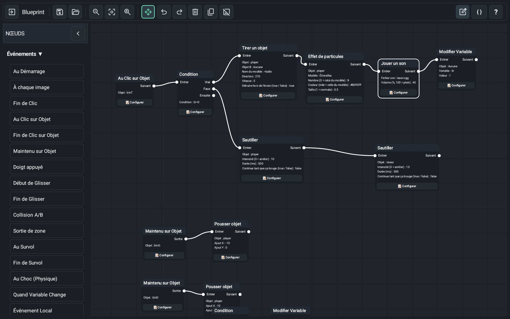
لا شيء لتكتبه: تبني منطق لعبتك بكتل مرئية (عقد) مربوطة ببعضها. تغطي 238 عقدة جاهزة الحركة والفيزياء والرسوم المتحركة والصوت والحوارات والمخزون والكاميرا والمؤقتات والشروط. اطوِ سلاسل كاملة من العقد لإبقاء مساحة عملك نظيفة. وزر واحد يرتب كل العقد بلمسة في أشجار مقروءة من اليسار إلى اليمين.
دماغ ألعابك
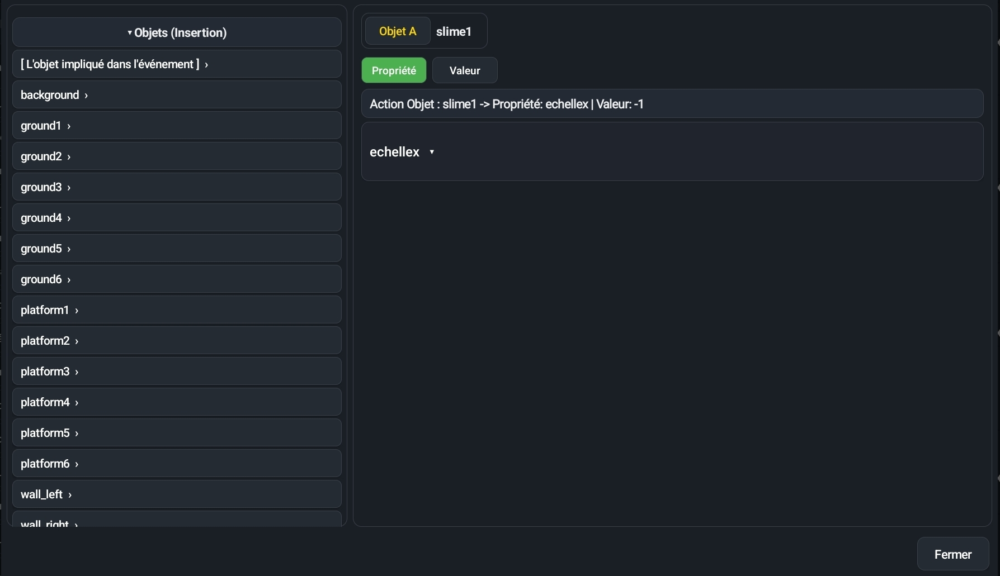
المس عقدة لضبطها: تعرض النافذة أولاً ما تؤثر فيه (① على ماذا؟)، ثم إعداداتها (②). اختر الصور والأصوات والرسوم من قوائم، وأجب بـ«نعم» أو «لا» بلمسة. صيغ صغيرة مثل score + 1 تستخدم المتغيرات وموضع الإصبع وعصا التحكم والوقت وخصائص الكائنات: المس مساعداً على اليسار فقط، وسطر «بعبارة بسيطة» يشرح الصيغة بالكلمات.
ألعاب أمثلة جاهزة
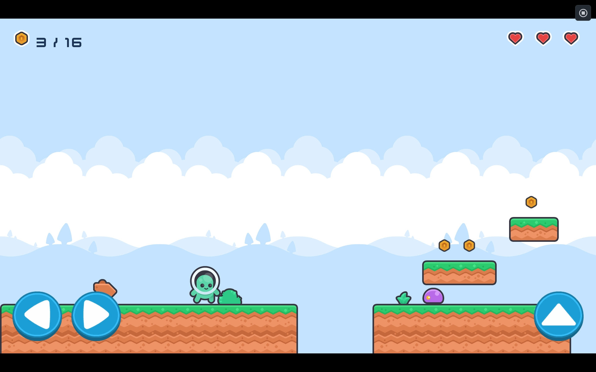
يمكن تنزيل عشرين لعبة مثال من تبويب «الأمثلة» في المحرك: Neon shooter (سفينة أركيد)، Neon jump (منصات بكاميرا تتبع)، Platformer (عملات وأعداء و3 أرواح)، Climb & run (شخصية تمشي وتقفز وتنحني وتتسلق السلالم وحدها)، Maze chase (متاهة تطاردك فيها ذبابتان)، Pirate battle (معركة بحرية ضد القراصنة)، Candy match (مطابقة 3 حلوى)، Memory cards (إيجاد أزواج البطاقات)، Nexus UI (واجهة مستقبلية: قوائم وخيارات ومتجر)، Firefly Night (قصة خيارات بـ4 نهايات)، Dungeon walk وDungeon escape (زنزانة متساوية القياس للاستكشاف ثم الهروب)، Crypt key (زنزانة بمنظر علوي: أبواب فخ وأشواك وحارس ومفتاح)، Lost on the moon (قصة خيارات بعدة لغات) وعرض لكل التأثيرات المرئية. افتحها والعبها ثم غيّرها لتفهم كيف يعمل كل شيء. جديد: Filters showcase، 32 مرشح شاشة و19 انتقالاً لتجربتها بلمسة. Hana Has an Urgent Question، كوميديا حوار عبثية بـ5 نهايات. Ruins maze، متاهة أطلال ضخمة متساوية القياس تُستكشف بضوء مشعل واحد. Space 1، لعبة تصويب فضائية عمودية مرسومة كالرسم التخطيطي، بزعيم وصواريخ موجهة ومكافآت أرواح إضافية. شاهد كل الأمثلة ←
على الأجهزة اللوحية والهواتف
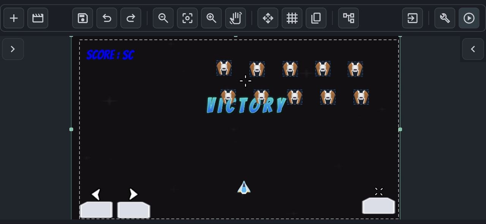
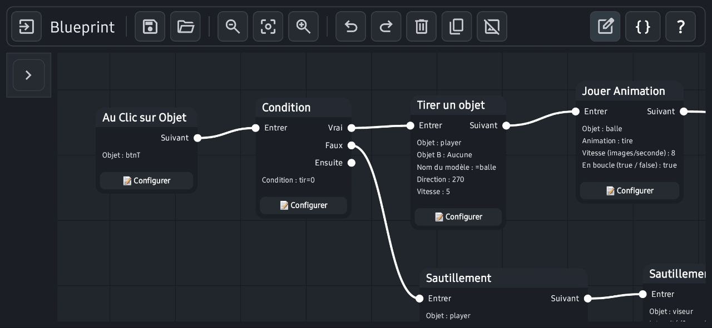
توفر الأجهزة اللوحية أكثر التجارب راحة، لكن Yop2D يعمل أيضاً على هواتف أندرويد بالوضع الأفقي. على الشاشات الصغيرة تنتقل اللوحات إلى تخطيط مدمج لترك أكبر مساحة لمشهدك. يمكن تمرير الشريط العلوي بإصبعك، ويتبع التكبير بالقرص أصابعك.
قدرات المحرك
عقد مرئية بلا برمجة
238 عقدة لبناء منطق لعبتك بربط الكتل، مع صيغ بسيطة عند الحاجة.
63 نموذجاً للمبتدئين
تبويب «النماذج» فيه مشاريع صغيرة مرتبة حسب الفئة: يُظهر كل منها شيئاً واحداً ويشرح أي عقدة تفعل ماذا.
ألعاب حوار (روايات بصرية)
قصص خيارات كما في Ren'Py، لكن بلا برمجة وعلى جهاز لوحي: شخصيات بمشاعر ترمش وتتكلم، نص يظهر حرفاً حرفاً، كلمات ترتجف أو تتموج، أزرار خيارات كبيرة (موقوتة أو مقفلة)، اسم اللاعب، سجل، 10 لغات.
رواية بصرية حقيقية وكاملة
شاشة عنوان مع «متابعة»، حفظ تلقائي عند كل جملة و5 خانات حفظ بصورة، زر ◀ رجوع (حتى قبل خيار)، نهايات للاكتشاف ومعرض صور تذكارية، إعدادات للاعب (سرعة النص، مستويات الصوت، تخطي ما قُرئ فقط)، قلوب صداقة، صورة في صندوق النص، جمل مقروءة بصوت عالٍ، خيارات كبطاقات كبيرة مصورة، وخريطة للقصة كلها في المحرر. تنطوي الأزرار في قائمة ☰ واحدة.
حرّك شخصياتك
عقدة «تحريك شخصية» تجعل شخصية تنزلق من مكان إلى آخر أو تكبر أو تقفز أو ترتجف، بالمدة والأسلوب اللذين تختارهما (منتظم، ناعم، ارتداد…). يمكنها انتظار انتهاء الحركة أو ترك القصة تتابع.
معرض ومشاهد قابلة للإعادة وموسيقى
لمعرض شاشة العنوان ثلاثة تبويبات: الصور والنهايات، مشاهد لإعادة تشغيلها، والموسيقى. حدد بداية المشهد ونهايته بـ«مشهد قابل للإعادة»: يفتحه اللاعب بالعب، ثم يمكنه مشاهدته متى شاء. والموسيقى التي سمعها يمكنه الاستماع إليها من جديد.
وضع الرواية
عقدة «وضع الرواية» تجعل النص يملأ الشاشة كلها فوق خلفية معتمة: تتراكم الأسطر تحت بعضها كما في كتاب وتُقلب الصفحة وحدها. يمكنك تشغيله وإيقافه في أي وقت، مثلاً لسرد ليلي بين محادثتين.
أجواء وتكبير وانتقالات
عقدة واحدة للمطر والعواصف بالبرق والرعد والثلج والبتلات واليراعات والليل والغروب أو الذكريات، بأصواتها. تكبير سلس وانتقالات دائرة أو نجمة أو مسح: لكل الألعاب.
مرشحات الشاشة والانتقالات
32 مرشحاً تمنح اللعبة كلها «مظهراً» بعقدة واحدة، «مرشح الشاشة»: تلفاز، VHS، أبيض وأسود، تحت الماء، كابوس، مصباح يدوي، Game Boy، نيون، خلل… تظهر وتختفي بلطف («إيقاف المرشح»). و19 شكل انتقال (دائرة، نجمة، قلب، ستارة، ساعة، دوامة…) تتيح الانتقال من مشهد إلى آخر بـ«تغيير المشهد بانتقال». يعرضها مثال «Filters showcase» كلها بلمسة.
ملء الشاشة على كل هاتف
لا مزيد من الأشرطة السوداء على الشاشات الطويلة: في ☰ ← إعدادات اللعبة، «ملاءمة شاشة اللاعب» تقترح «الإبقاء على الشكل» و«تمديد» (الكائنات الموضوعة في الزوايا تذهب إلى زوايا الشاشة) و«ملء» (يستمر الديكور على الجانبين دون تشوه). تبدأ المشاريع الجديدة بـ«تمديد».
زر الرجوع في الهاتف
عقدة «تم الضغط على زر الرجوع» تتفاعل مع زر الرجوع في أندرويد: افتح قائمة إيقاف مؤقت، أو عد إلى الشاشة السابقة، أو اسأل «هل تريد الخروج؟». دون هذه العقدة لا يفعل زر الرجوع شيئاً أثناء اللعبة، فلا يخرج أحد بالخطأ.
لعبتك الأولى في 5 دقائق
دليل مدمج يرشدك إلى صنع لعبة صغيرة حقيقية خطوة بخطوة: جرّب اللعبة، أضف عقدة، اربطها، اضبطها. في كل خطوة يريك المحرك أين تلمس.
بطلي المتحرك و4 مهام
دليل مدمج ثانٍ ينشئ بطلاً يركض ويقفز، مع أرض وخلفية وموسيقى. ثم تتابع 4 مهام خطوة بخطوة في اللعبة نفسها: عملات ونقاط، عدو يقوم بدورية، شاشة «النصر!» بقصاصات وصوت، وأخيراً ملف APK لتثبيته على الهاتف. تُظهر فقاعة أين تلمس، ويساعدك «✨ افعلها عني» إن تعثرت.
قصتي الأولى في 5 دقائق
دليل مدمج رابع يجعلك تكتب قصة خيارات قصيرة دون استيراد أي شيء أو وضع أي شيء في المشهد: جملة لهناء، سؤال، إجابتان، ثم تلعب. في كل خطوة يُظهر إطار أين تلمس، حتى داخل النوافذ.
إعدادات بكلمات بسيطة
تعرض نافذة العقدة أولاً ما تؤثر فيه، ثم إعداداتها. مساعدات جاهزة للمس (الإصبع والشاشة، عصا التحكم، الوقت، الكائنات، المتغيرات) وسطر «بعبارة بسيطة» يحوّل كل صيغة إلى جملة. أسماء بسيطة في كل مكان: «نعم / لا» بدل true / false.
تصدير APK دون إنترنت
تتحول لعبتك إلى تطبيق أندرويد حقيقي، يُبنى على الجهاز اللوحي أو الهاتف نفسه، حتى دون إنترنت.
مشاهد كأنها كائنات (prefabs)
يمكن وضع أي مشهد ككائن داخل مشهد آخر: مثالي لصف من الأعداء المتطابقين أو قطع قابلة لإعادة الاستخدام.
استهداف بالوسوم
أعطِ الكائنات وسماً، فتؤثر عقدة واحدة فيها كلها دفعة واحدة: حرّك كل الأعداء، دمّر كل العملات.
سلوكيات جاهزة
في نافذة «⚙ سلوك الكائن» قل ما هو الكائن: ديكور، أرض، جسم يسقط، شخصية منصات (مشي، قفز، سلالم)، شخصية منظر علوي أو كائن يُسحب بإصبع. تتغير رسومه المتحركة (سكون، مشي، قفز، تسلق) وحدها مع الحركة. الجاذبية والارتداد والتصادمات، و«مطاردة» أو «هروب» للأعداء. ويمكن للعدو أيضاً القيام بدورية وحده: يذهب ويجيء، ويستدير عند حافة هاوية أو أمام جدار.
إيجاد المسار
شخصية أو عدو يجد وحده أقصر مسار على شبكة ملتفاً حول الجدران: متاهات، زنزانات، ألعاب استراتيجية.
خرائط البلاط
ارسم المستويات من مجموعة بلاط وحدد البلاطات الصلبة مرة واحدة: التصادمات تلقائية.
شبكات وألغاز
عقد لملء شبكة ومطابقة 3 قطع متماثلة وخلط اللوحة: كل ما تحتاجه للعبة مطابقة ثلاثية مثل Candy match.
منظر متساوي القياس
تظهر الكائنات أمام بعضها أو خلفه حسب موضعها، وتتبع عصا التحكم الأقطار: مثالي للزنزانات وألعاب المنظر ثلاثي الأرباع مثل Dungeon walk.
متغيرات ومخزون وحفظ
نقاط، أرواح، قوائم مخزون، وحفظ حالة اللعبة أو استعادتها في أي وقت.
تحكم باللمس
عصي تحكم وأزرار افتراضية وطبقات واجهة، مع اللمس المتعدد: تحرك وتقفز في الوقت نفسه.
إيقاف مؤقت وحركة بطيئة
تتبع اللعبة كلها الإيقاف المؤقت والحركة البطيئة، بينما تبقى قائمة الإيقاف تعمل.
حوار وصوت وكاميرا
حوارات نصية، مؤثرات صوتية بتحكم في مستوى الصوت، موسيقى متكررة، كاميرا تتبع اللاعب داخل حدود المستوى، اهتزاز الكاميرا والاهتزاز اللمسي.
جسيمات وتأثيرات مرئية
13 نموذجاً للجسيمات (انفجار، نار، دخان، مطر، ثلج، فضاء فائق، موجة صدمة…)، آثار، توهج، صعق كهربائي، توقف عند الضربة، وميض، تلوين، تعتيم الأطراف وتلاشي الشاشة.
ألعاب بعدة لغات
اكتب كل حوار بعدة لغات: تعرض اللعبة تلقائياً لغة هاتف اللاعب، أو اللغة المختارة في قائمة.
محرر بسيط ومريح
شريط أدوات مختصر على الأساسيات (زر + واحد للكائنات والمشاهد)، أسلوب نظيف لا يضيء فيه بالأزرق إلا الأداة النشطة، منتقي ألوان كامل، نافذة كبيرة لكتابة النصوص، رسوم متحركة تُختار مجلداً مجلداً، ووضع «تحريك فقط» لترتيب العقد دون كسر الروابط.
مفتش واضح
يعرض الكائن المحدد صورته المصغرة واسمه، وقفلاً لتثبيته، وأقساماً قابلة للطي، ومنزلقات للعتامة والدوران، وسلسلة للحفاظ على النسب عند تغيير الحجم.
مكتبة Yop2D المدمجة
لا حاجة للبحث عن الصور في مكان آخر: نحو 420 صورة مرتبة حسب الموضوع (شخصيات، أعداء، أغراض، أرضيات، خلفيات، أزرار)، كثير منها متحرك («مع رسومها المتحركة» تضبط كل شيء)، ومؤثرات صوتية وموسيقى و10 خطوط وعناوين جاهزة. وتبويب «حزم للتنزيل» يضيف حزماً عبر الإنترنت (قراصنة، فضاء، واجهة هولوغرام، مؤثرات خاصة، طائرة، وحوش، إيماءات اللمس).
أغراض جاهزة للتنزيل
تبويب «Prefabs للتنزيل» في المكتبة يقدم أغراضاً لها سلوكها بالفعل: أزرار متحركة (نجمة تدور، نينجا بكسل يتجول على الزر، نيون نابض، زجاج لامع، زر ▶ دائري…)، مجانية وCC0. حدد عدة منها، نزّلها دفعة واحدة، ثم «أضف إلى المشهد»: تأتي معها الصور والخطوط والعقد، وتتفاعل كل نسخة وحدها. يبقى كل شيء قابلاً للتعديل، ويمكنك استيراد prefabs الخاصة بك كملف .zip. كل prefab تضيفه يصبح مشهداً قائماً بذاته: المسه في قائمة المشاهد (يظهر تحت المشهد الذي يستخدمه) لتغيير الصورة أو اللون أو النص أو العقد، وتتبعه كل النسخ. وتُقدَّم أيضاً قطع واجهة: مفتاح تشغيل / إيقاف، شريط صحة متحرك، نقاط منبثقة ونافذة إيقاف مؤقت.
نمط حوار على ذوقك
يُضبط نمط الحوار بلا برمجة: الألوان، الشفافية، الشكل، صور إطارات لا تتشوه، حدود النص، نافذة قابلة للتخصيص بالكامل يكتب فيها اللاعب اسمه، نصف علوي للشخصية يتجاوز الصندوق (يساراً أو يميناً) وإبراز سلس للمتحدث (يصعد بينما يهبط الآخرون). كل إعداد مستقل: يمكنك الإبقاء على واحد دون الآخر، مثلاً دون إضاءة خافتة.
اكتشف المحرر
دليل مدمج ثالث يشرح الواجهة: حدد كائناً وحرّكه، غيّر حجمه وأدره، اقفله، تراجع، حرّك العرض وكبّر. تُظهر بطاقة أين تلمس وتصبح شبه شفافة عندما تلمس المشهد.
اختر لغتك
عند أول تشغيل، تعرض نافذة 10 لغات، مع تحديد لغة الهاتف مسبقاً. كل نص في المحرك مترجم، بما في ذلك رسائل الخطأ وتصدير APK.
كائنات مرتبة في مجلدات
في قائمة كائنات المشهد، أنشئ مجلدات ومجلدات فرعية واسحب كائناتك إليها بإصبعك. تتبع قوائم الاختيار (هدف العقدة، المتغيرات، الأب) هذا الترتيب، مع الوسوم وأنواع الكائنات: لا مزيد من القوائم التي لا تنتهي.
بكسل آرت حاد
إعداد في اللعبة يبقي البكسلات حادة تماماً عند تكبير صور البكسل آرت. حزم ما قبل التاريخ والنينجا في المكتبة مصنوعة لهذا.
ألعاب عمودية
اختر أفقياً أو عمودياً عند إنشاء لعبة (أو في ☰ ← إعدادات اللعبة): ألعاب تصويب عمودية، ألعاب ورق، ألغاز. زر ▶ يعدّل الشاشة وحده وتبقى اللعبة المصدَّرة عمودية.
صواريخ موجهة وانفجارات
عقدة واحدة تطلق صاروخاً يبدأ في اتجاه ثم ينعطف ببطء نحو هدفه، كما في لعبة أركيد حقيقية. وإذا لم يصب شيئاً ينفجر عند نهاية عمره. وعقدة أخرى تدمّر كائناً بعد مهلة، مفيدة للانفجارات.
حوارات قابلة للتخصيص بالكامل
لألعاب الحوار: الألوان، الشفافية، الشكل وحدود النص، إطارات صور لا تتمدد، أزرار الإجابة، شاشة العنوان، نافذة كتابة اللاعب لاسم، مدة ظهور الشخصيات وكيفيته، صورة تبرز من الصندوق، وإبراز لمن يتكلم. لكل إعداد معاينة.
عداد FPS والوقت
قيمتان يمكن استخدامهما في أي صيغة: «fps» (الإطارات المعروضة فعلاً في الثانية) و«delta» (الزمن منذ الإطار السابق بالثواني). نص بـ ="FPS: " + fps يكفي لعرض عداد.
أيقونة خاصة بلعبتك
اختر أيقونة لعبتك المصدَّرة: أي صورة، مع التكبير والموضع على معاينة مربعة. على الشاشة الرئيسية للهاتف تحتفظ لعبتك بأيقونتها بدل شعار Yop2D.
ألعاب بلغة اللاعب
في لعبة مصدَّرة كـ APK، تتبع الأزرار والإعدادات وشاشة العنوان متغير «langue» الخاص باللعبة، وإلا لغة الهاتف: يرى اللاعب الروسي الروسية، ويرى اللاعب الياباني اليابانية.
محرر بلاط مصنوع للأصابع
صورة مجموعة البلاط كاملة بشبكتها، وحجم الخانة مُخمَّن لك، وكتل من عدة بلاطات كختم، وتكبير بالقرص. فرشاة، ممحاة، مستطيل، تعبئة، قطارة، بلاطة عشوائية وإعادة؛ وتُحدد البلاطات الصلبة على الصورة نفسها.
أزرار وشاشات حوار بألوانك
أزرار أيقونات دائرية (رجوع، سجل، تلقائي، تخطّي، حفظ، إعدادات) بالحجم والألوان وصورة الإطار التي تختارها؛ أعد تنسيق شاشات الحفظ والإعدادات والمعرض؛ وزر للعودة إلى شاشة العنوان من الإعدادات.
استورد ملفات MP3 وسيحوّلها Yop2D
يُحوَّل ملف MP3 المستورد إلى OGG تلقائياً (أندرويد 10 وما بعده): تتكرر الموسيقى بسلاسة على كل هاتف.
حفظ تلقائي
لا مزيد من نسيان زر 💾: يحفظ المشروع وBlueprint نفسيهما بإيقاع منتظم (30 ث أو دقيقة أو 5 دقائق، باختيارك)، وعند مغادرة Blueprint، وعند تبديل التطبيقات، وقبل ▶ مباشرة. لا يُحفظ شيء أثناء تشغيل اللعبة.
بدّل المشهد دون مغادرة Blueprint
زر باسم المشهد أعلى Blueprint يفتح قائمة المشاهد: اختر واحداً، يُحفظ Blueprint الحالي ويُفتح Blueprint المشهد الآخر فوراً. مفيد لنسخ العقد من مشهد إلى آخر.
منطقة كاميرا واضحة تماماً
اختر لون إطار الكاميرا (أحمر، أصفر، أخضر، سماوي، أبيض، أسود…) ونمط خطه (متقطع، متصل أو سميك): يبقى ظاهراً على أي خلفية.
مناطق حرة: جدران وحظائر
ارسم منطقة بعدد النقاط الذي تريد وقرر هل لا يدخلها أحد (جدار) أم لا يخرج منها أحد (حظيرة). مثالي للمتاهات والحلبات والغرف. يعرضها نموذج بنظرة واحدة.
اصنع موسيقاك
أداة «موسيقى» في نافذة الأصول: ضع كتلاً جاهزة (هادئ، حماسي، غموض، مرح، زنزانة، قراصنة، حزين) على 4 مسارات — لحن، وتر، باس، طبول — تعزفها آلات حقيقية (بيانو، أوتار ناعمة، باس، طبول، حرة الاستخدام). يمكنك بناء كتلك في محرر نغمات، وطلب «اقترح عليّ فكرة»، والاستماع بتكرار دون انقطاع، ثم إنشاء ملف .ogg يُحفظ في مجلد الأصوات الذي تختاره وتشغّله عقدة عادية. يتطلب أندرويد 10 أو أحدث.
تحقق من لعبتي
زر يراجع لعبتك ويخبرك بكلمات بسيطة ما الخطأ: متغير أو كائن مفقود، عقدة غير مرتبطة بشيء، إعداد مطلوب تُرك فارغاً، ملف مفقود. لمسة واحدة تريك أين تصلحه.
خيارات اللعبة المصدَّرة
عند إنشاء APK: الأيقونة، رقم الإصدار، صورة الإطلاق مع تلاشٍ، إبقاء الشاشة مضاءة، السماح بالاهتزازات أو منعها. يُثبَّت الإصدار الجديد فوق القديم دون إلغاء التثبيت.
محادثات برسائل نصية
وضع «SMS» للقصص: تصبح الجمل فقاعات على هاتف، مع النقاط الثلاث الصغيرة «…» قبل كل رسالة مستلمة. يجيب اللاعب بلمس خيار وتصل الإجابة على اليمين. الألوان والحجم والهاتف بملء الشاشة: كل شيء يُضبط في نمط الحوارات.
إنجازات للفتح
عقدة «فتح إنجاز»: يظهر شريط «تم فتح إنجاز!» أعلى الشاشة، وتمتلئ قائمة الإنجازات (مخفية حتى تُكسب، مع تلميح إن أردت) في «النهايات والمعرض». يمكن ضبط الألوان وصورة الإطار والمدة والمكان والصوت.
نص غامق ومائل
في أسطر الحوار: [b]غامق[/b] و[i]مائل[/i]، بزرين في محرر السطر، فوق اللون والارتجاف والتموج والتوقف.
أنشئ مؤثراتك الصوتية
محرر مؤثرات صوتية في الأصول: أصوات ريترو قابلة للضبط (ليزر، قفز، عملة، انفجار…) مع رسم موجتها، إضافة إلى 435 صوتاً واقعياً للتنزيل (خطوات، اصطدامات، واجهة، أصوات بشرية) تضبطها بمنزلقات بسيطة. كل شيء يُحفظ بصيغة .ogg في مشروعك.
شاشة بداية للعبتك
في الأصول، محرر «بدء التشغيل»: صورة خلفية، شعار، عنوان منسّق، نص، حركة دخول وخروج، مرشح وصوت. يُعرض قبل لعبتك المصدَّرة، ويمكن للاعبين تخطيه بلمسة.
خلفيات متحركة (بارالاكس)
في ألعاب الحوار، يمكن للخلفية أن تكبر أو تنزلق ببطء، مع طبقة وسطى ومقدمة تتحركان بسرعات مختلفة: عمق دون سطر برمجة واحد.
حركات خطوة بخطوة
اختر كائناً، وضعه في الخطوة 1، ثم حرّكه أو أدره أو غيّر حجمه في الخطوة 2 و3… يحسب Yop2D كل ما بينها. شغّل الحركة بعقدة، أو اجعل صورة (طائر، سحابة، بعوضة) تعبر خلفية قصة.
مصاعد ومنصات متحركة
في ⚙ السلوك: «مصعد» (الاتجاه، المسافة، التوقف، البدء عند صعود أحد عليه). يحمل ما يقف عليه، ويدفع أو يسحق (إعادة المشهد، إزالة روح). وحدث «إذا لمس الكائن وسماً» يعرف أيضاً أي جهة لُمست.
قصّ لوح صور متحركة
زر «لوح» في الأصول: قل كم عموداً وصفاً، فيقصّ Yop2D الصورة وينشئ الرسوم المتحركة، واحدة لكل صف أو باختيار الصور يدوياً (حتى عندما يمتد رسم على عدة صفوف). تتعرف السلوكيات على الأسماء المقترحة.
احتفظ بالنقاط واللعبة
عقدتان، «حفظ المتغيرات» و«تحميل المتغيرات»: تُستعاد النقاط أو الأرواح أو المخزون عندما يغلق اللاعب اللعبة ويعيد فتحها. يوضح ذلك نموذج جاهز.
حرّك شخصية من صورة واحدة
«ورشة الشخصيات» (زر «شخصية» في الأصول) تأخذ صورة واحدة لبطلك من الجانب، وتضع هيكلاً عظمياً (رقبة، أكتاف، مرافق، ركب…)، وتقص كل جزء بخط متعدد النقاط، ثم تصنع رسوم السكون والمشي والجري والقفز والهجوم والإصابة. تصلح الأمور بإصبعك ومكبّرة، وتسدّ الثقوب بختم، وتتعرف سلوك «شخصية منصات» على الرسوم.
إمالة الهاتف وهزّه
اقرأ الإمالة في صيغة (inclinaison.x وinclinaison.y)، وحرّك شخصية بإمالتها (⚙ السلوك ← التحكم ← إمالة)، ودحرج كرة في متاهة (مربع «كرة» في الفيزياء الواقعية) وتفاعل مع الهزّ بحدث «تم هز الهاتف». تعيد عقدة «إعادة الإمالة إلى الصفر» نقطة البداية. ثلاثة نماذج: التحرك بالإمالة، متاهة الكرة، هز لرمي النرد.
🏫 في المدرسة ولدى الأطفال
صُمم Yop2D للتعلم بالإبداع. يستطيع الأطفال استخدامه من نحو 8 سنوات مع شخص بالغ (والد أو معلم)، ووحدهم من 11-12 سنة. في الصف يصنع كل تلميذ لعبته بجهاز لوحي بسيط.
🔒 لا بيانات شخصية
لا حساب ولا بريد إلكتروني ولا إعلانات ولا شيء للشراء. الإحصائيات مجهولة ويمكن إيقافها بلمسة.
📶 يعمل دون إنترنت
بعد التثبيت يعمل Yop2D دون اتصال: مناسب لصف بلا واي فاي.
📱 على أجهزة المدرسة اللوحية
أندرويد 8 أو أحدث، حتى على الأجهزة الأساسية. لا حاجة إلى حاسوب.
🌍 10 لغات
الواجهة والألعاب بـ 10 لغات: مثالي أيضاً لصف لغات أجنبية.
🧭 تعلم خطوة بخطوة
«لعبتك الأولى في 5 دقائق»، و63 نموذجاً يُظهر كل منها شيئاً واحداً، ومهام موجهة وإعدادات مشروحة بكلمات بسيطة.
🎓 وضع المدرسة
واجهة أبسط، دون محتوى عنيف (انفجارات وأسلحة) ودون روابط إلى شبكات التواصل، محمية برمز المعلم.
كيف يعمل وضع المدرسة؟
- في الشاشة الرئيسية، المس زر 🎓 بجانب «اللغة»، فعّل «وضع المدرسة» واختر ما يتغير.
- محتوى لطيف: تختفي الانفجارات والأسلحة والتصويب من المكتبة، مع أمثلة ونماذج القتال وعقدة «إطلاق كائن».
- واجهة مبسطة: نحو خمسين عقدة أساسية فقط (حركة، قفز، متغيرات، نصوص، أصوات، شروط، مشاهد…) وبلا أدوات متقدمة.
- بلا روابط خارجية: لا Discord ولا Telegram ولا حزم للتنزيل.
- يختار المعلم رمزاً من 4 أرقام: يُطلب لتغيير وضع المدرسة أو إيقافه. بعد رمز خاطئ عليك الانتظار 30 ثانية. يبقى الرمز على الجهاز اللوحي ولا يُرسل شيء.
المشاريع التي بدأت بالفعل تواصل العمل: وضع المدرسة يغيّر ما يُقدَّم فقط.
هل أنت معلم؟ لنبنِ Yop2D معاً
اختبار عن درس اليوم، قصة تفاعلية، لعبة مفردات إنجليزية… أخبرنا بما يحتاجه صفك: يمكننا إعداد نماذج لدروسك، وإضافة لغة أو ميزة، والإجابة عن أسئلتك. يصنع Yop2D مطور مستقل يقرأ كل رسالة.
💬 Discord : zinzin0000 · Yop2D Discord
أدلة للمبتدئين
إجابات خطوة بخطوة عن أكثر أسئلة المبتدئين شيوعاً، مكتوبة بعقد المحرك الحقيقية. يمكنك أيضاً قراءتها داخل Yop2D، في مساعدة محرر العقد.
فقدان الصحة ونهاية اللعبة
متغير صحة وشريط صحة والعودة إلى البداية عندما تصل الصحة إلى 0.
مرجع العقد
كل عقد Yop2D الـ238 في صفحة واحدة: ما تفعله كل عقدة وإعداداتها ومخارجها ومثال. الأسماء هي نفسها تماماً التي تراها في محرر العقد.
Yop2D مقارنةً بمحركات أخرى
هناك محركات ألعاب ممتازة. إليك مقارنة صادقة تساعدك على الاختيار، بما في ذلك ما لا يفعله Yop2D.
| المحرك | أين تصنع | كيف تبرمج | ثنائي / ثلاثي الأبعاد | السعر | أين تعمل لعبتك |
|---|---|---|---|---|---|
| Yop2D | تطبيق أندرويد (جهاز لوحي، هاتف)، يعمل دون إنترنت | عقد مرئية، بلا برمجة | ثنائي الأبعاد | مجاني، بلا إعلانات؛ بع ألعابك بحرية | أندرويد (APK يُبنى على الجهاز) |
| GDevelop | حاسوب، متصفح، تطبيق جوال | أحداث، بلا برمجة (JavaScript اختياري) | ثنائي وثلاثي الأبعاد | مجاني ومفتوح المصدر؛ خطط مدفوعة لخدمات إضافية عبر الإنترنت | أندرويد، iOS، ويب، حاسوب (تُصنع نسخ الجوال عبر الإنترنت) |
| Construct 3 | متصفح (وعلى الأجهزة اللوحية أيضاً) | أوراق أحداث، بلا برمجة (JavaScript اختياري) | ثنائي الأبعاد غالباً | اشتراك مدفوع؛ نسخة مجانية محدودة | أندرويد، iOS، ويب، حاسوب (تُصنع نسخ الجوال عبر الإنترنت) |
| Godot | حاسوب، متصفح، محرر أندرويد | برمجة (GDScript وC#) | ثنائي وثلاثي الأبعاد | مجاني ومفتوح المصدر | أندرويد، iOS، ويب، حاسوب |
| Ren'Py | حاسوب (Windows وmacOS وLinux) | سكريبت بسيط (لغة Ren'Py، وPython اختيارية) | ثنائي الأبعاد، متخصص في الروايات البصرية | مجاني ومفتوح المصدر | حاسوب، أندرويد، iOS، ويب (نسخ الجوال تُبنى على الحاسوب) |
ملخص مبسط حتى أكتوبر 2026. تتغير المحركات بسرعة: راجع موقع كل محرك للتفاصيل.
Yop2D مصنوع لك إذا…
- لديك جهاز أندرويد لوحي أو هاتف فقط، دون حاسوب؛
- تريد الإبداع في أي مكان، حتى دون إنترنت؛
- لا تريد تعلم لغة برمجة؛
- تريد أداة مجانية بلا إعلانات ولا اشتراك ولا علامة مائية في ألعابك؛
- تريد كتابة قصة خيارات (رواية بصرية) دون تعلم سكريبت، وربما مزجها بلعبة حقيقية (ألغاز، منصات، قتال)؛
- تريد مشاركة ألعابك كتطبيقات أندرويد مع الأصدقاء أو العائلة أو الطلاب، أو نشرها على itch.io ومنصات أخرى تقبل ملفات APK، مجاناً أو للبيع.
ما لا يفعله Yop2D (بعد)
- تعمل ألعابك على أندرويد فقط: لا نسخة لـ iPhone أو الويب أو الحاسوب.
- لا تصدير AAB بعد، وهو الصيغة المطلوبة للنشر على Google Play. هذا مخطط لإصدار لاحق.
- ثنائي الأبعاد فقط.
- المجتمع وعدد الدروس لا يزالان ينموان، وبعض الأخطاء ممكنة: تصل الإصلاحات بسرعة، غالباً خلال أيام.
- لا لغة برمجة للمبرمجين ذوي الخبرة: كل شيء يتم بالعقد.
- المحرك مجاني، لكن شيفرته المصدرية غير عامة.
متى يكون محرك آخر خياراً أفضل
- تحتاج نسخاً لـ iPhone أو الويب أو الحاسوب من لعبتك: GDevelop أو Construct أو Godot.
- تريد تعلم البرمجة الحقيقية أو صنع ألعاب ثلاثية الأبعاد: Godot.
- تعمل على حاسوب وتريد محركاً بلا برمجة مع مجتمع كبير: GDevelop أو Construct.
- تكتب رواية بصرية طويلة على حاسوب وتريد الأداة المرجعية، الكاملة جداً، ذات المجتمع الكبير: Ren'Py.
الأسئلة الشائعة
أين أنزّل Yop2D؟
من Google Play («Yop2D: 2D Game Maker»)، مجاناً وبلا إعلانات. Yop2D متوفر أيضاً على itch.io. يعمل على أندرويد 8.0 أو أحدث.
ما هو Yop2D؟
Yop2D محرك ألعاب ثنائية الأبعاد مجاني وبلا برمجة لأندرويد. يتيح لأي شخص صنع لعبة فيديو كاملة على جهاز لوحي أو هاتف بعقد مرئية، دون معرفة بالبرمجة، وتصديرها كملف APK مباشرة على الجهاز.
هل Yop2D مجاني فعلاً؟ وهل توجد إعلانات؟
نعم، Yop2D مجاني 100%: لا اشتراك ولا مشتريات داخل التطبيق ولا رسوم مخفية. لا توجد إعلانات في Yop2D، ولن توجد أبداً.
لمن تعود الألعاب التي أصنعها؟ وهل يمكنني بيعها؟
ألعابك ملك لك. يمكنك الاحتفاظ بها أو إهداؤها أو مشاركتها أو بيعها، دون طلب إذن ودون دفع أي شيء لـ Yop2D.
هل يمكنني صنع رواية بصرية كما في Ren'Py؟
نعم. لدى Yop2D عقد مصنوعة لألعاب الحوار: «قول جملة» (شخصية، شعور، نص حرفاً حرفاً)، و«طرح خيار» (مخرج لكل إجابة، مؤقت، إجابات مقفلة)، و«تغيير الخلفية»، و«طلب نص من اللاعب» (اسمه) و«الجو» (مطر، عاصفة، ثلج، ليل…). للشخصيات بطاقة بصورة لكل شعور؛ وهي ترمش وتتكلم. كل شيء يتم بإصبعك، دون برمجة، ويمكن أن تكون اللعبة بـ 10 لغات. افتح نموذج «قصة خيارات» أو مثال Firefly Night للبدء. وهناك أيضاً شاشة عنوان مع «متابعة»، وحفظ تلقائي و5 خانات حفظ، وزر ◀ رجوع، ونهايات للاكتشاف مع معرض، وإعدادات للاعب، وقلوب صداقة، وقراءة بصوت عالٍ، وخريطة للقصة كلها. يريك دليل «قصتي الأولى» كيف تبدأ في 5 دقائق. يمكن للشخصيات أن تنزلق أو تكبر أو تقفز أو ترتجف («تحريك شخصية»)، وهناك وضع رواية بملء الشاشة ومعرض لمشاهد وموسيقى قابلة للإعادة.
هل يوجد شعار Yop2D أو علامة مائية في ألعابي؟
لا. الألعاب التي تصدّرها لا تحتوي أي شعار لـ Yop2D ولا شاشة افتتاحية ولا علامة مائية.
هل Yop2D مفتوح المصدر؟
لا. استخدام Yop2D مجاني، لكن شيفرته المصدرية غير عامة. لا يغيّر هذا شيئاً في ألعابك: إنها ملكك بالكامل.
لا أعرف البرمجة. هل هذه مشكلة؟
أبداً. يستبدل Yop2D الشيفرة بعقد مرئية تربطها ببعضها. صُمم للمبتدئين وللمبدعين الذين يفضلون التركيز على لعبتهم. تريك أدلة المبتدئين الطريقة خطوة بخطوة.
على أي أجهزة يعمل Yop2D؟
الأجهزة اللوحية والهواتف التي تعمل بأندرويد 8.0 أو أحدث. الأجهزة اللوحية هي الأكثر راحة؛ وعلى الهواتف يعمل Yop2D بالوضع الأفقي بواجهة مدمجة. لا توجد نسخة لـ iPhone أو iPad أو الحاسوب.
هل أحتاج إلى حاسوب أو اتصال بالإنترنت؟
لا. ينشئ Yop2D لعبتك ويصدّرها كملف APK مستقل مباشرة على جهازك، دون اتصال 100%. لا بناء سحابي ولا حساب.
هل يمكنني نشر لعبتي على Google Play؟
ليس مباشرة بعد. يصدّر Yop2D ملفات APK: يمكنك تثبيتها ومشاركتها أو نشرها على مواقع تقبل ملفات APK مثل itch.io. يتطلب Google Play صيغة AAB موقّعة بمفتاحك الخاص: هذا التصدير مخطط لإصدار لاحق.
هل يمكنني لعب لعبتي من Yop2D على iPhone أو الويب أو الحاسوب؟
لا. الألعاب المصنوعة بـ Yop2D تطبيقات أندرويد. إن احتجت منصات أخرى، راجع المقارنة لمحركات تدعمها.
أي أنواع الألعاب يمكنني صنعها؟
ألعاب ثنائية الأبعاد: منصات، مغامرات بمنظر علوي، ألعاب تصويب، أركيد وألغاز، اختبارات، قصص تفاعلية… يغطي محرر البلاط والفيزياء والتصادمات والرسوم المتحركة والحوارات والمخزون والحفظ معظم الاحتياجات. لا يصنع Yop2D ألعاباً ثلاثية الأبعاد.
هل يمكنني استخدام صوري وأصواتي وموسيقاي؟
نعم. تستورد صورك ومجموعات البلاط وإطارات الرسوم المتحركة والمؤثرات الصوتية والموسيقى. تُنشأ العناوين والتأثيرات النصية مباشرة في المحرك. ويتضمن المحرك أيضاً مكتبة من نحو 420 صورة (كثير منها متحرك) ومؤثرات صوتية وموسيقى وخطوطاً وعناوين جاهزة، إضافة إلى حزم للتنزيل: لا حاجة للبحث في مكان آخر للبدء.
بأي لغات يتوفر Yop2D؟
الواجهة والمساعدة المدمجة والأدلة ومرجع العقد متوفرة بـ 10 لغات: الإنجليزية والفرنسية والإسبانية والألمانية والإيطالية والبرتغالية والروسية والصينية المبسطة واليابانية والعربية (تجريبية).
كيف أتعلم استخدام Yop2D؟
ابدأ بدليل «لعبتك الأولى في 5 دقائق»: يجعلك تبني لعبة صغيرة حقيقية خطوة بخطوة، ويريك أين تلمس. افتح تبويب «النماذج»: 63 مشروعاً صغيراً يُظهر كل منها شيئاً واحداً، مع شرح على الشاشة. ثم العب بألعاب الأمثلة الـ31 واتبع أدلة المبتدئين. يشرح مرجع العقد كل العقد الـ238، وقناة YouTube وDiscord وTelegram موجودة للمساعدة. وفي المحرك، يذهب دليل «بطلي المتحرك» ومهامه الأربع (☰ ← مهام خطوة بخطوة) أبعد، حتى اللعبة المثبّتة على هاتفك. ويشرح دليل «اكتشف المحرر» الواجهة: تحريك، تغيير الحجم، تدوير، قفل، تراجع.
ما هو الـ prefab في Yop2D؟
الـ prefab كائن جاهز: يأتي بصورته ونصه وعقده المربوطة سلفاً، مثل زر متحرك. في المحرر، افتح المكتبة، تبويب «⬇ Prefabs للتنزيل»، نزّل واحداً أو أكثر، ثم المس «＋ إضافة إلى المشهد». الـ prefabs مجانية وCC0. يمكنك تعديلها كما تشاء واستيراد prefabs الخاصة بك من ملف .zip. لا تخلطه مع «المشاهد ككائنات» التي تتيح إعادة استخدام أحد مشاهدك. يوجد دليل خطوة بخطوة: «كيف أضيف كائناً جاهزاً؟». كل prefab تضيفه يصبح مشهداً قائماً بذاته: المسه في قائمة المشاهد (يظهر تحت المشهد الذي يستخدمه) لتغيير الصورة أو اللون أو النص أو العقد، وتتبعه كل النسخ. وتُقدَّم أيضاً قطع واجهة: مفتاح تشغيل / إيقاف، شريط صحة متحرك، نقاط منبثقة ونافذة إيقاف مؤقت.
كيف أستأنف مهمة في منتصفها؟
افتح مشروعك، المس ☰ ثم «مهام خطوة بخطوة» واختر المهمة. تبدأ الفقاعة من جديد من الخطوة الأولى: المس «تخطّي» لتجاوز الخطوات التي أنجزتها، أو «◀» للعودة إلى خطوة سابقة. تعرض المهمة المنتهية علامة ✓ ويمكن إعادتها.
لماذا يعرض أندرويد تحذيراً عند تثبيت APK؟
لأن ملف APK يُنزَّل من خارج متجر Play. المس مزيد من التفاصيل ثم تثبيت على أي حال. لتفادي هذا التحذير، ثبّت Yop2D من Google Play.
هل يجمع Yop2D بيانات؟
يرسل Yop2D إحصائيات استخدام مجهولة: عند فتحه وإغلاقه، ومدة استخدامه، وتقارير الأعطال (نوع الخطأ فقط)، مع إصدار التطبيق وإصدار أندرويد ولغة الجهاز. يُقدَّر البلد من الاتصال دون تخزين عنوان IP. لا بيانات شخصية ولا شيء من مشاريعك. يمكنك إيقافها من الشاشة الرئيسية، والألعاب التي تصدّرها لا ترسل شيئاً. التفاصيل: سياسة الخصوصية.
هل انتهى تطوير Yop2D؟
Yop2D قيد التطوير النشط ومتوفر على Google Play. يمكن استخدامه فعلاً لصنع ألعاب كاملة، لكن الأخطاء ممكنة: صدّر مشاريعك بانتظام كنسخة احتياطية، وأبلغ عن المشاكل على Discord أو Telegram.
من يصنع Yop2D؟
يصنع Yop2D مطور مستقل، بملاحظات مجتمعه من المختبرين.
ما الفرق بين Yop2D وGDevelop أو Construct أو Godot؟
صُمم Yop2D ليعمل بالكامل على جهاز أندرويد لوحي أو هاتف، دون برمجة ودون إنترنت ودون حاسوب، ويبقى مجانياً بلا إعلانات. في المقابل، لا يصنع إلا ألعاباً ثنائية الأبعاد لأندرويد. انظر المقارنة التفصيلية.
هل يمكن استخدام Yop2D في الصف؟
نعم. Yop2D مجاني، بلا إعلانات ولا حساب ولا بيانات شخصية، ويعمل دون إنترنت على أجهزة أندرويد اللوحية العادية. يبسّط وضع المدرسة (زر 🎓 في الشاشة الرئيسية) الواجهة ويخفي المحتوى العنيف والروابط الخارجية، ويحميه رمز المعلم. يمكن للمعلمين مراسلتنا لتكييف Yop2D مع صفهم.
هل Yop2D مناسب للأطفال؟
نعم، من نحو 8 سنوات مع شخص بالغ (والد أو معلم)، ووحدهم من 11-12 سنة. تُظهر الأدلة المدمجة أين تلمس، وتشرح النماذج شيئاً واحداً في كل مرة، والإعدادات مكتوبة بكلمات بسيطة. يجعل وضع المدرسة الواجهة أبسط وألطف.
كيف أغيّر أيقونة لعبتي؟
افتح ☰ ← إعدادات اللعبة ← أيقونة اللعبة، اختر صورة، اضبط التكبير والموضع، ثم احفظ. تُطبَّق الأيقونة عند بناء APK؛ ودون أيقونة مختارة يبقى شعار Yop2D.
كيف أصنع موسيقاي؟
في نافذة الأصول، المس زر «موسيقى» (أندرويد 10 أو أحدث). ضع كتلاً جاهزة على المسارات الأربعة (لحن، وتر، باس، طبول)، أو ابنِ كتلك في محرر النغمات، واستمع بتكرار، ثم المس «إنشاء الصوت (.ogg)»: يُحفظ الملف في مجلد الأصوات الذي تختاره ويُشغَّل بعقدة «Jouer la musique». الآلات حرة الاستخدام (CC0). يوجد دليل خطوة بخطوة: «كيف أصنع موسيقاي؟».
ماذا يستطيع Yop2D أن يفعل اليوم؟
في المحرر: تراجع وإعادة (في المشهد وفي Blueprint)، حفظ تلقائي، نسخ ولصق، مجلدات لتنظيم الكائنات والملفات، محاذاة على الشبكة، عدة مشاهد، اختبار فوري بزر ▶ وزر «تحقق من لعبتي» الذي يكتشف ما نسيته. للإنشاء: 238 عقدة، محرر بلاط، محرر رسوم متحركة، صانع موسيقى، ألعاب حوار بخانات حفظ، مرشحات شاشة، جسيمات، إيجاد المسار، 63 نموذجاً وأدلة خطوة بخطوة. للمشاركة: تصدير APK على الجهاز بأيقونتك ورقم إصدارك وصورة إطلاقك. الحدود الحالية: أندرويد وثنائي الأبعاد فقط، ومطور مستقل يحدّث المحرك كثيراً.
انضم إلى المجتمع
Yop2D مشروع مستقل قيد التطوير النشط. أبلغ عن الأخطاء، وشارك ألعابك، واقترح ميزات أو ساعد في تحسين الترجمات.